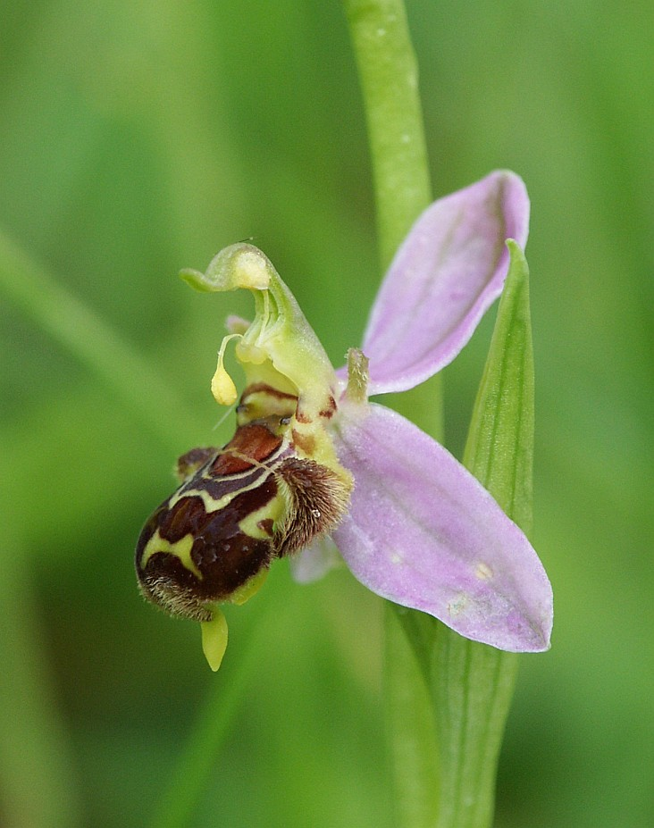

ORQUÍDEA ABEJA
Ophrys apifera

Imita el cuerpo de una abeja hembra y libera sustancias químicas con olores similares a feromonas sexuales para atraer a los machos.
- Nombre científico: Ophrys apifera
- Mimetismo: Imita el cuerpo de abejas hembra y libera sustancias químicas que huelen como feromonas sexuales o señales de alarma de presas.
- Hábitat: Bosques de niebla, selvas tropicales y zonas montañosas húmedas.
- Sentido: Olor.
- Uso: Supervivencia.
- Función: Reproducción.